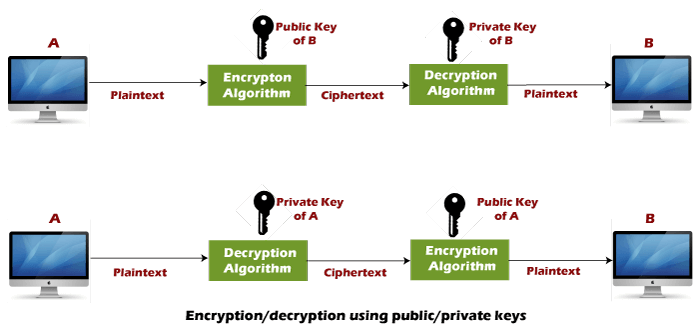

الانترنت الكمي
النظرية الأولي
على حسب ما ذكر سابقاً أنه من غير المتوقع في المستقبل القريب بأن تتوفر الحواسب الكمية للاستخدامات الشخصية وإنما ستكون محصورة في المؤسسات الحكومية والتعليمية والبحثية وما شابه، وبالطبع من غير الممكن أن تنشئ شبكة انترنت كمية من دون أن يكون هنالك حاسوبين كميان على الأطراف وهو ما يدعم المقولة بأن الإنترنت الكمي لم يوجد ليستبدل الانترنت العادي وإنما ليكون شريك او بديل لحل بعض المشكلات ومساندة الشبكة العادية.
هناك تصوران رئيسيان عن الانترنت الكمي و سنبدأ في شرح الفكرة الاولى منهما وهي استخدام الكيوبت في قنوات النقل بدلاً من البت العادي على سبيل المثال استخدام كيوبت فوتون في قناة الياف ضوئية أو في مثال آخر كما نجحت التجربة الصينية في العام 2017 من نقل فوتونات متشابكة كمية بين قمر صناعي ومحطات أرضية عبر استخدام أشعة الليزر، لكن كانت النتائج بأنهم استطاعوا استعادة فوتون واحد من كل 6 ملايين فوتون (عدد قليل جدا)
ما الفائدة إذا ؟
لدى العلماء الكثير من التصورات المستقبلية عن ماذا يمكن للحاسوب الكمي أن يفعل مثل خوارزمية المسائل كمية متعددة الحدود محدودة الخطأ(bounded-error quantum polynomial time) او محاكاة عمل الأدوية لكن العائق حتى اللحظة هو عدم توفر حواسيب كمية تحتوي على عدد الكيوبت الكافية لتطبيق أي من هذه التصورات وهذا يمكن حله في حال توفر شبكة انترنت كمية بين الحواسيب الكمية وجمع قدراتها الحاسوبية لتعمل معا كجهاز واحد
استخدام الخصائص الكمومية في أمان البيانات. البروتوكول المستخدم عامة على شبكات الانترنت هو ال ريفست شامير أدلمان ( RSA encryption) والمعتمد على خاصية التعقيد الحسابي والذي لم يستطيع تقديم أي إثبات رياضي على مدى التعقيد الفعلي لعكس العملية.

مع بداية اتضاح الفكرة عن الحواسيب الكمية وقدراتها في ثمانينات القرن العشرين بدأ العلماء في تطوير ما يمكن تحقيقه منها، فظهر بروتوكول توزيع المفتاح الكمي Quantum key distribution (QKD) والمعتمد على مبادئ ميكانيكا الكم صمم بروتوكول توزيع المفتاح الكمي ليستفيد من خصائص الفيزياء الكمية وأهمها انهيار حالة الوضع الفائق (Superposition) عند القياس وخاصية التشابك الكمي ما يمكنه من اكتشاف أي محاولة لقراءة البيانات أثناء النقل ومنع العديد من أنواع الهجوم المتعارف عليها حاليا مثل رجُل في الوسط(Man-in-the-middle attack) أو هجوم الاختطاف (hijacking) بحيث انه يتم نقل البيانات بين الطرفين والكيوبتات في حالة الوضع الفائق ولحظة أن تتعرض البيانات في منتصف الطريق للاعتراض ستنهار حالة الوضع الفائق وتخسر البيانات
النظرية الثانية
قد تعلمنا سابقاً بأن الكيوتات المتشابكة كميا لها تصرف مرتبط ببعضها وبالتالي إن استطعنا التحكم في طرف سنضمن تصرف الطرف الآخر وبالتالي ما يمكننا من نقل البيانات بين اجهزة متشابكة كموميا بينها مسافات غير محصورة دون أي توصيلات سلكية أو لاسلكية؛ فقط يكفي وجود كيوبتات متشابكة كميا موزعة عند كل عند طرف من هذه الأجهزة .
لكن هناك العديد لهذه النظرية بعد وهو الصعوبة البالغة في انشاء وفصل الكيوبتات المتشابكة كميا وايضا الصعوبة في التحكم في حركة الكيوبتات وحركة دورانها سواء الى اعلى او اسفل فما تزال هذه النظرية صعبة التحقيق في الوقت الحالي.